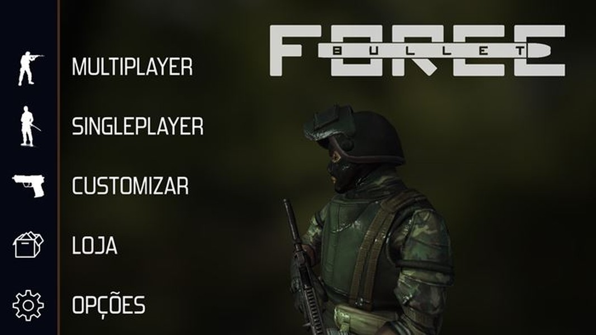

Bullet Force
Bullet Force tem uma grande inspiração em famosos FPS para computador, como Counter-Strike, por exemplo. São quatro modos diferentes disponíveis, como mata-mata e conquista, que prometem prender a atenção dos jogadores. Você joga com players do mundo todo e por conta disso é necessário possuir conexão com a internet, porém também é possível jogar offline contra os famosos "bots".
Bullet Force tem foco no multiplayer online, mas seus modos offline também chamam atenção. É possível jogar uma campanha simples sem precisar de internet. Além disso, o jogo oferece salas com bots para treino offline. Ideal para aquecer entrar de entrar no online. Bullet Force é um dos games de tiro mais honestos da Google Play. Sem limitadores de energia, sem compras abusivas. O game se resume a treinar, receber bônus e comprar armas. Há apenas uma coisa chata no game. A necessidade de criar uma conta com e-mail para poder salvar o progresso. O jogo deveria ter opção de integração com a Google Play. Algo que dispensaria ter que realizar cadastro, gravar nome e senha. Mas esse é o único problema do jogo.
O visual do jogo impressiona devido ao seu tamanho. Bullet Force “pesa” apenas 212 MB e a qualidade dos cenários é impressionante. Qualquer celular intermediário pode rodar o jogo com gráficos no máximo. Com uma coleção já considerável de armas, Bullet Force ainda possui sistema de criação de partidas para até 16 jogadores online. Os modos de jogos são Conquista, Livre para todos, Times e Gun game.
